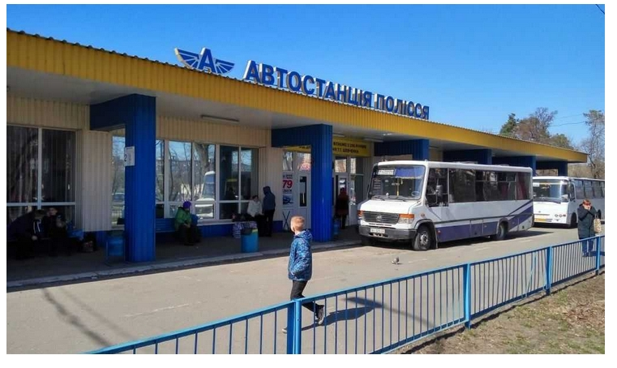

Автовокзал Київ АС-2 «Полісся» Адреса автовокзалу: пл. Шевченка, 2 Телефон довідки: 044-4303554 -------------------------------------------------- Розклад руху маршруток по автовокзалу «Полісся» за маршрутами . ............................................................ Київ — Іванків 07:15 08:55 10:00 11:25 12:20 12:30 13:00 13:20 13:45 16:20 18:15 18:45 19:15 20:00 Київ — Вахівка 15:20(Пт-Нд) 18:45(Пт) Київ — Володарка 09:45 15:45 Київ — Губин 10:45 17:45 Київ — Десна 06:30 08:00 09:00 10:00 11:05 13:00 14:00 15:00 17:05 18:30 19:20 Київ — Димарка 10:20 11:00 15:20 17:25 Київ — Катюжанка 07:20 10:10 14:20 17:20 20:00 Київ — Козаровичі 10:30 13:30 17:20 19:20 Київ — Коленцівське 11:50 16:45(Пт-Нд) Київ — Красилівка 09:10 14:40 Київ — Кропивня 09:30 14:30 Київ — Ладижичі 08:00 19:00 Київ — Луговики 08:00 14:15 Київ — Людвинівка 10:30 15:00 Київ — Лісовичі 10:30(Пт-Нд) 16:50 Київ — Мозир (Біл) 16:50(Пн,Пт,Нд) Київ — Овруч 08:00(Сб-Нд) 10:10 13:30 17:45 Київ — Піски 12:00(Пт-Нд) 20:20 Київ — Рагівка 11:15 17:05 Київ — Радинка 08:20 12:05 16:05 17:35 Київ — Страхолісся 08:35 14:00 19:30 Київ — Сувид 07:40 10:30 12:30 14:30 16:50 19:00 20:30 Київ — Сухолуччя 09:25 12:55 16:40 Київ — Тетерів 16:30 18:30 19:30 Київ — Чернігів 11:50 17:35 Київ — Чорнобиль 07:35 11:40 15:30 Переяслав-Хмельницький — Радинка 15:30(Пт) Радинка — Переяслав-Хмельницький 15:55(Нд) ------------------------------------------------- Розклад руху маршруток по автовокзалу «Полісся» за часом відправлення. ............................................................ 06:30 Київ — Десна 07:15 Київ — Іванків 07:20 Київ — Катюжанка 07:35 Київ — Чорнобиль 07:40 Київ — Сувид 08:00 Київ — Овруч (Сб-Нд) 08:00 Київ — Ладижичі 08:00 Київ — Десна 08:00 Київ — Луговики 08:20 Київ — Радинка 08:35 Київ — Страхолісся 08:55 Київ — Іванків 09:00 Київ — Десна 09:10 Київ — Красилівка 09:25 Київ — Сухолуччя 09:30 Київ — Кропивня 09:45 Київ — Володарка 10:00 Київ — Десна 10:00 Київ — Іванків 10:10 Київ — Катюжанка 10:10 Київ — Овруч 10:20 Київ — Димарка 10:30 Київ — Сувид 10:30 Київ — Лісовичі (Пт-Нд) 10:30 Київ — Людвинівка 10:30 Київ — Козаровичі 10:45 Київ — Губин 11:00 Київ — Димарка 11:05 Київ — Десна 11:15 Київ — Рагівка 11:25 Київ — Іванків 11:40 Київ — Чорнобиль 11:50 Київ — Чернігів 11:50 Київ — Коленцівське 12:00 Київ — Піски (Пт-Нд) 12:05 Київ — Радинка 12:20 Київ — Іванків 12:30 Київ — Сувид 12:30 Київ — Іванків 12:55 Київ — Сухолуччя 13:00 Київ — Десна 13:00 Київ — Іванків 13:20 Київ — Іванків 13:30 Київ — Козаровичі 13:30 Київ — Овруч 13:45 Київ — Іванків 14:00 Київ — Десна 14:00 Київ — Страхолісся 14:15 Київ — Луговики 14:20 Київ — Катюжанка 14:30 Київ — Кропивня 14:30 Київ — Сувид 14:40 Київ — Красилівка 15:00 Київ — Людвинівка 15:00 Київ — Десна 15:20 Київ — Димарка 15:20 Київ — Вахівка (Пт-Нд) 15:30 Переяслав-Хмельницький — Радинка (Пт) 15:30 Київ — Чорнобиль 15:45 Київ — Володарка 15:55 Радинка — Переяслав-Хмельницький (Нд) 16:05 Київ — Радинка 16:20 Київ — Іванків 16:30 Київ — Тетерів 16:40 Київ — Сухолуччя 16:45 Київ — Коленцівське (Пт-Нд) 16:50 Київ — Лісовичі 16:50 Київ — Мозир (Біл) (Пн,Пт,Нд) 16:50 Київ — Сувид 17:05 Київ — Десна 17:05 Київ — Рагівка 17:20 Київ — Козаровичі 17:20 Київ — Катюжанка 17:25 Київ — Димарка 17:35 Київ — Радинка 17:35 Київ — Чернігів 17:45 Київ — Губин 17:45 Київ — Овруч 18:15 Київ — Іванків 18:30 Київ — Тетерів 18:30 Київ — Десна 18:45 Київ — Іванків 18:45 Київ — Вахівка (Пт) 19:00 Київ — Сувид 19:00 Київ — Ладижичі 19:15 Київ — Іванків 19:20 Київ — Козаровичі 19:20 Київ — Десна 19:30 Київ — Страхолісся 19:30 Київ — Тетерів 20:00 Київ — Катюжанка 20:00 Київ — Іванків 20:20 Київ — Піски 20:30 Київ — Сувид